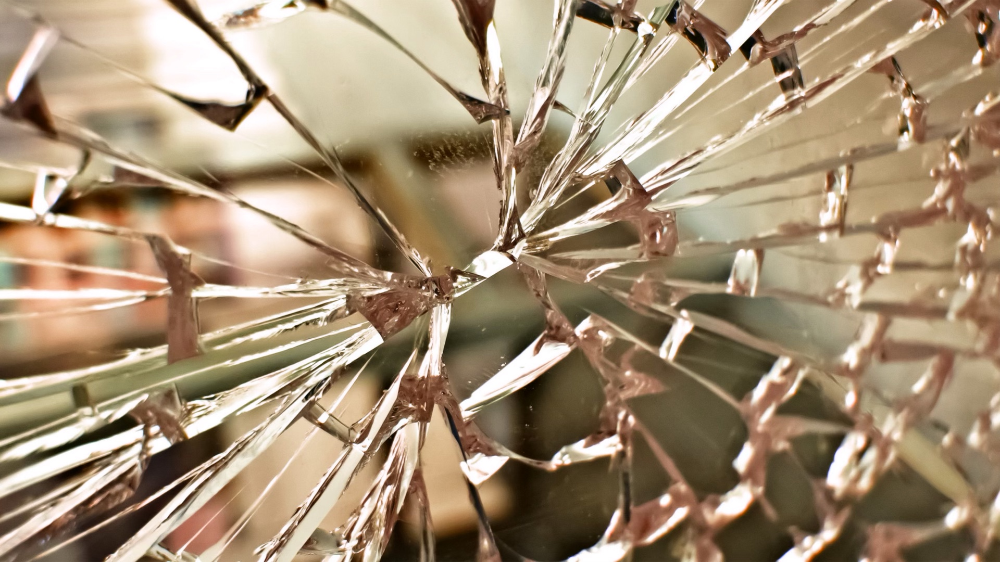

Glass delusion is an external manifestation of a psychiatric disorder recorded in Europe mainly in the late Middle Ages and early modern period (15th to 17th centuries). People feared that they were made of glass "and therefore likely to shatter into pieces".
From Wikipedia, the free encyclopedia